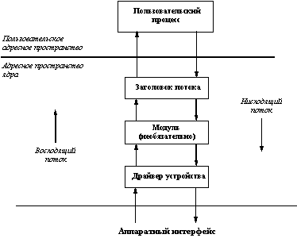

Операционная система UNIX с самого своего возникновения была по своей сути сетевой операционной системой. Однако по причине одновременного наличия нескольких вариантов ОС (см. раздел 1) образовалось несколько альтернативных механизмов, каждый из которых обладал собственными преимуществами и недостатками. В наиболее унифицированном и стандартизированном варианте UNIX System V среди этих механизмов был наведен некоторый порядок, и в этом разделе мы приведем сравнительно краткий обзор современного положения дел.
В самых ранних вариантах UNIX коммуникационные средства основывались на символьном вводе/выводе, главным образом потому, что аппаратной основой являлись модемы и терминалы. Поскольку такие устройства являются относительно медленными, в ранних вариантах не требовалось особенно заботиться о модульности и эффективности программного обеспечения. Несколько позже в системе появилась поддержка более развитых устройств, протоколов, операционных режимов и т.д., но программные средства по-прежнему основывались на ограниченных возможностях символьного ввода/вывода.
С появлением многоуровневых сетевых протоколов, таких как TCP/IP (US Defense Advanced Research Project Agency's Transmission Control Protocol/Internet Protocol), SNA (IBM's System Network Architecture), OSI (Open Systems Internetworking), X.25 и др. стало понятно, что в ОС UNIX требуется некоторая общая основа организации сетевых средств, основанных на многоуровневых протоколах. Для решения этой проблемы было реализовано несколько механизмов, обладающих примерно одинаковыми возможностями, но не совместимых между собой, поскольку каждый из них являлся результатом некоторого индивидуального проекта.
Общей проблемой ОС UNIX было то, что слабая развитость подсистемы ввода/вывода требовала решения задачи проектирования и включения в систему нового драйвера при каждом подключении нового устройства. Хотя зачастую уже существовал программный код, обладающий хотя бы частью функций, требуемых в новом драйвере, отсутствовала возможность использования этого существующего кода.
Во многом эта проблема была решена компанией AT&T, которая предложила и реализовала механизм потоков (STREAMS), обеспечивающий гибкие и модульные возможности для реализации драйверов устройств и коммуникационных протоколов. Потоки были впервые реализованы Деннисом Ритчи в 1984 году и были включены в пакет Networking Support Facilities (NSU) UNIX System V Release 3.
В UNIX System V Release 3 потоки были включены как основа реализации существующего символьного ввода/вывода. Однако в Release 4 в реализацию потоков были включены интерфейс драйвера устройства (DDI - Device Driver Interface) и интерфейс между драйвером и ядром (DKI - Device Kernel Interface), которые в совокупности одновременно обеспечивают возможности по взаимодействию драйвера устройства с ядром системы и простоту повторного использования имеющегося исходного кода драйверов. С использованием механизма потоков были переписаны практически все символьные драйверы, полностью переработаны подсистема управления терминалами и механизм программных каналов (pipes).
Если не вдаваться в детали, Streams представляют собой связанный набор средств общего назначения, включающий системные вызовы и подпрограммы, а также ресурсы ядра. В совокупности эти средства обеспечивают стандартный интерфейс символьного ввода/вывода внутри ядра, а также между ядром и соответствующими драйверами устройств, предоставляя гибкие и развитые возможности разработки и реализации коммуникационных сервисов. При этом механизм потоков не навязывает какой-либо конкретной архитектуры сети и/или конкретных протоколов. Как и любой другой драйвер устройства, потоковый драйвер представляется специальным файлом файловой системы со стандартным набором операций: open, close, read, write и ioctl. Простейшая форма организации потокового интерфейса показана на рисунке 2.4.

Рис. 2.4. Простая форма потокового интерфейса
Когда пользовательский процесс открывает потоковое устройство, пользуясь системным вызовом open, ядро связывает с драйвером заголовок потока. После этого пользовательский процесс общается с заголовком потока так, как если бы он представлял собой обычный драйвер устройства. Другими словами, заголовок потока отвечает за обработку всех системных вызовов, производимых пользовательским процессом по отношению к потоковому драйверу. Если процесс выполняет запись в устройство (системный вызов write), заголовок потока передает данные драйверу устройства в нисходящем направлении. Аналогично, при реализации чтения из устройства (системный вызов read) драйвер устройства передает данные заголовку потока в восходящем направлении.
В описанной схеме данные между заголовком потока и драйвером устройства передаются в неизменяемом виде без какой-либо промежуточной обработки. Однако можно добиться того, чтобы данные подвергались обработке при передаче их в любом направлении, если включить в поток между заголовком и драйвером устройства один или несколько потоковых модулей. Потоковый модуль является обработчиком данных, выполняющим определенный набор функций над данными по мере их прохождения по потоку. Простейшими примерами потокового модуля являются разного рода перекодировщики символьной информации. Более сложным примером является потоковый модуль, осуществляющий разборку нисходящих данных в пакеты для их передачи по сети и сборку восходящих данных с удалением служебной информации пакетов.
Каждый потоковый модуль является, вообще говоря, независимым от присутствия в потоке других модулей, обрабатывающих данные. Данные могут подвергаться обработке произвольным числом потоковых модулей, пока в конце концов не достигнут драйвера устройств при движении в нисходящем направлении или заголовка потока при движении в восходящем направлении. Для передачи данных от заголовка к драйверу или модулю, от одного модуля другому и от драйвера или модуля к заголовку потока используется механизм сообщений. Каждое сообщение представляет собой набор блоков сообщения, каждый из которых состоит из заголовка, блока данных и буфера данных.
TCP/IP (Transmission Control Protocol/Internet Protocol) представляет собой семейство протоколов, основным назначением которых является обеспечение возможности полезного сосуществования компьютерных сетей, основанных на разных технологиях. В 1969 году Агентство перспективных исследовательских проектов министерства обороны США (DARPA - Department of Defense Advanced Research Project Agency) поддержало и финансировало проект, посвященный поиску общей основы связи сетей с разной технологией. В результате выполнения этого проекта была образована единая виртуальная сеть, получившая название Internet. В Internet для связи независимых сетей, или доменов используется набор шлюзов. Каждый индивидуальный узел сети (Host) идентифицируется уникальным адресом, называемым адресом в Internet.
Для разрешения проблемы различий в форматах кадров, используемых в разных сетях, был определен универсальный формат пакета данных, называемого IP-датаграммой (Internet Protocol Datagram), состоящего из заголовка и порции данных и поэтому похожего на обычный сетевой кадр. Однако порция данных IP-датаграммы сама содержится внутри сетевого кадра, т.е. IP-датаграмма погружается в сетевой кадр конкретного формата и поэтому может передаваться в разных сетях, входящих в Internet. Все узлы, шлюзы и сети Internet должны быть в состоянии понимать IP-датаграммы.
Узлы, взаимодействующие в Internet, не устанавливают между собой физические соединения для целей индивидуального взаимодействия. Поэтому датаграммы не обрабатываются в каком-либо конкретном порядке. Напротив, каждая датаграмма обрабатывается независимо от других, что позволяет эффективно разделять ресурсы для всего множества (логически) связанных узлов. Но это, к сожалению, означает, что сервис, предоставляемый Internet, не является надежным, поскольку не гарантирует доставку пакетов в нужном порядке, отсутствие потерь датаграмм или отсутствие их дублирования.
Эту проблему решает протокол TCP (Transmission Control Protocol), обеспечивающий надежную доставку сообщений за счет подтверждений доставки датаграмм и их повторной передачи в случае надобности. Если узел, посылающий датаграмму, не получает подтверждение о ее доставке в течение установленного промежутка времени, то считается, что датаграмма не доставлена, и она посылается повторно.
Полное семейство протоколов, основанных на использовании IP-датаграмм, называется TCP/IP. Наиболее важными и базисными протоколами этого семейства (или стека, как его часто называют) являются кратко описанные выше протоколы IP и TCP. Мы не будем описывать остальные протоколы семейства TCP/IP. Для определенности все они перечислены в таблице 2.2. Большая часть коммуникационных средств ОС UNIX основывается на использовании протоколов стека TCP/IP.
Таблица 2.2.
Семейство протоколов TCP/IP
Название
протокола | Описание протокола
| TCP | Протокол управления передачей (Transmission Control Protocol)
| | UDP | Протокол пользовательских датаграмм (User Datagram Protocol)
| | ARP | Протокол разрешения адресов (Address Resolution Protocol)
| | RARP | Протокол обратного разрешения адресов (Reverse Address Resolution Protocol)
| | IP | Протокол Internet (Internet Protocol)
| | ICMP | Протокол управляющих сообщений Internet (Internet Control Message Protocol)
| | FTP | Протокол пересылки файлов (File Transfer Protocol)
| | TFTP | Простой протокол пересылки файлов (Trivial File Transfer Protocol)
| |
В UNIX System V Release 4 протокол TCP/IP реализован как набор потоковых модулей плюс дополнительный компонент TLI (Transport Level Interface - Интерфейс транспортного уровня). TLI является интерфейсом между прикладной программой и транспортным механизмом. Приложение, пользующееся интерфейсом TLI, получает возможность использовать TCP/IP.
Интерфейс TLI основан на использовании классической семиуровневой модели ISO/OSI, которая разделяет сетевые функции на семь областей, или уровней. Цель модели в обеспечении стандарта сетевой связи компьютеров независимо от производителя аппаратуры компьютеров и/или сети. Семь уровней модели можно кратко описать следующим образом.
Уровень 1: Физический уровень (Physical Level) - среда передачи (например, Ethernet). Уровень отвечает за передачу неструктурированных данных по сети.
Уровень 2: Канальный уровень (Data Link Layer) - уровень драйвера устройства, называемый также уровнем ARP/RARP в TCP/IP. Этот уровень, в частности, отвечает за преобразование данных при исправлении ошибок, происходящих на физическом уровне.
Уровень 3: Сетевой уровень (Network Level) - отвечает за выполнение промежуточных сетевых функций, таких как поиск коммуникационного маршрута при отсутствии возможности прямой связи между узлом-отправителем и узлом-получателем. В TCP/IP этот уровень соответствует протоколам IP и ICMP.
Уровень 4: Транспортный уровень (Transport Level) - уровень протоколов TCP/IP или UDP/IP семейства протоколов TCP/IP. Уровень отвечает за разборку сообщения на фрагменты (пакеты) при передаче и за сборку полного сообщения из пакетов при приеме таким образом, что на более старших уровнях модели эти процедуры вообще незаметны. Кроме того, на этом уровне выполняется посылка и обработка подтверждений и, при необходимости, повторная передача.
Уровень 5: Уровень сессий (Session Layer) - отвечает за управление переговорами взаимодействующих транспортных уровней. В NFS (Network File System - Сетевая файловая система, см. п. 2.8.1) этот уровень используется для реализации механизма вызовов удаленных процедур (RPC - Remote Procedure Calls, см. п. 2.7.4).
Уровень 6: Уровень представлений (Presentation Layer) - отвечает за управление представлением информации. В NFS на этом уровне реализуется механизм внешнего представления данных (XDR - External Data Representation), машинно-независимого представления, понятного для всех компьютеров, входящих в сеть.
Уровень 7: Уровень приложений - интерфейс с такими сетевыми приложениями, как telnet, rlogin, mail и т.д.
Интерфейс TLI соответствует трем старшим уровням этой модели (с пятого по седьмой) и позволяет прикладному процессу пользоваться сервисами сети (без необходимости знать о деталях транспортного и более низких уровней). В System V Release 4 TLI реализован на основе механизма потоков. Для доступа используются не специальные системные вызовы, а функции библиотеки /usr/lib/libnsl_s.a.
Механизм программных гнезд (Sockets) впервые был реализован в 1982 году в UNIX BSD 4.1 в качестве развитого средства межпроцессных взаимодействий. Это средство, вообще говоря, позволяет любому процессу обмениваться сообщениями с любым другим процессом, независимо от того, выполняются они на одном компьютере или на разных, соединенных сетью. Функционально механизм программных гнезд близок к возможностям TLI (пятого уровня в соответствии с моделью ISO/OSI).
Программные гнезда входят в число обязательных компонентов стандартной среды ОС UNIX, однако реализуются в разных системах по-разному. В BSD-ориентированных системах Sockets исторически реализуются в ядре ОС, и пользователям предоставляются пять специальных системных вызовов: socket, bind, listen, connect и accept (подробнее о функциях этих системных вызовов см. п. 3.4.5).
В UNIX System V Release 4 тоже поддерживается механизм программных гнезд, однако он реализован не внутри ядра системы, а в виде набора библиотечных функций (библиотеки /usr/lib/libsocket.a), которые написаны с использованием механизма TLI. Заметим, что это в очередной раз демонстрирует преимущества подхода открытых систем, который всегда поддерживался в мире ОС UNIX: при наличии четко определенных интерфейсов и развитых базовых средств прикладной программист и разработанные им программы не должны зависеть от конкретной реализации.
Тем не менее, разработчики и поставщики System V призывают не использовать механизм Sockets в новых программах, а опираться непосредственно на возможности TLI. По нашему мнению, это дело вкуса, поскольку существует так много давно написанных программ, использующих программные гнезда, что ни один поставщик ОС UNIX никогда не решится перестать поддерживать Sockets.
Основными идеями механизма вызова удаленных процедур (RPC - Remote Procedure Calls) являются следующие:
(а) Во многих случаях взаимодействие процессов носит ярко выраженный асимметричный характер. Один из процессов ("клиент") запрашивает у другого процесса ("сервера") некоторую услугу (сервис) и не продолжает свое выполнение до тех пор, пока эта услуга не будет выполнена (и пока процесс-клиент не получит соответствующие результаты). Видно, что семантически такой режим взаимодействия эквивалентен вызову процедуры, и естественно желание оформить его должным образом синтаксически.
(б) Как уже отмечалось, ОС UNIX по своей идеологии с самого начала была по-настоящему сетевой операционной системой. Свойства переносимости позволяют, в частности, предельно просто создавать "операционно однородные" сети, включающие разнородные компьютеры. Однако, остается проблема разного представления данных в компьютерах разной архитектуры (часто по-разному представляются числа с плавающей точкой, используется разный порядок размещения байтов в машинном слове и т.д.). Плохо, когда решение проблемы разных представлений данных возлагается на пользователей. Поэтому второй идеей RPC (многие считают, что это основная идея) является автоматическое обеспечение преобразования форматов данных при взаимодействии процессов, выполняющихся на разнородных компьютерах.
Впервые пакет RPC был реализован компанией Sun Microsystems в 1984 году в рамках ее продукта NFS (Network File System - сетевая файловая система, см. п. 2.8.1). Пакет был тщательно специфицирован с тем, чтобы пользовательский интерфейс и его функции не были зависимыми от применяемого транспортного механизма. Заметим, что в настоящее время Sun распространяет два варианта пакета - бесплатный (Public Domain), основанный на использовании программных гнезд, и коммерческий, базирующийся на механизме потоков (на самом деле, на интерфейсе TLI). В обоих случаях пакет реализуется как набор библиотечных функций. Например, в случае использования коммерческого варианта RPC в среде System V программы должны компоноваться с библиотекой /usr/lib/librpcsvc.a. Специальные системные вызовы для реализации RPC не поддерживаются.
Независимость от конкретного машинного представления данных обеспечивается отдельно специфицированным протоколом XDR (EXternal Data Representation - внешнее представление данных). Этот протокол определяет стандартный способ представления данных, скрывающий такие машинно-зависимые свойства, как порядок байтов в слове, требования к выравниванию начального адреса структуры, представление стандартных типов данных и т.д. По существу, XDR реализуется как независимый пакет, который используется не только в RPC, но и других продуктах (например, в NFS).
Предыдущая глава | Оглавление | Следующая глава
Comments: [email protected]
Copyright © CIT